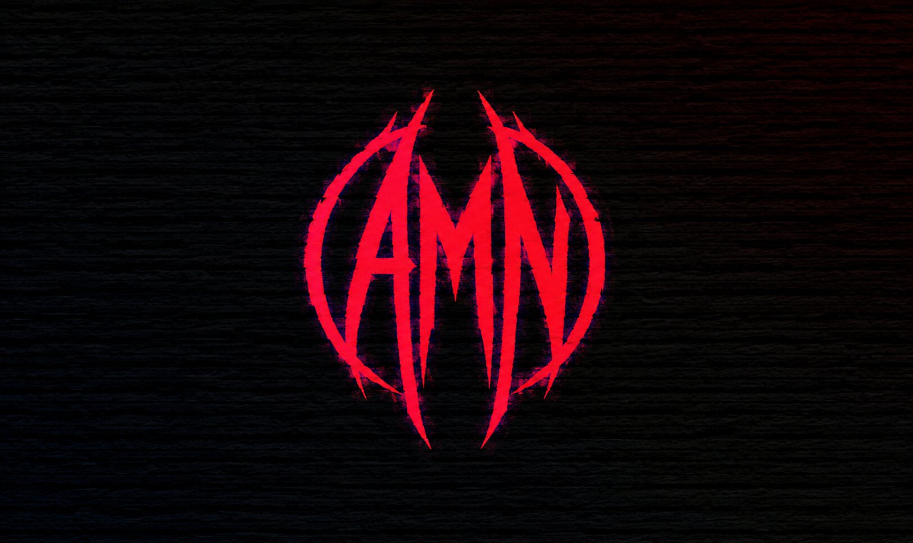

Abdul Muhaymin Nawaz
Abdul Muhaymin Nawaz founded his cybersecurity firm on a frustration shared by many but addressed by few: most organizations do not truly know where they are exposed until something goes wrong. His work exists to change that equation before the crisis, not after. He is a cybersecurity researcher and consultant with a focus on offensive security, vulnerability research, and red teaming. He has experience working with clients across various industries, including finance, healthcare, and technology, helping them identify and mitigate security risks. Abdul is passionate about ethical hacking and is committed to helping organizations improve their security posture through proactive testing and assessment. He has a strong track record of successfully identifying vulnerabilities and providing actionable recommendations to enhance overall security. With a deep understanding of the latest cybersecurity threats and trends, Abdul is dedicated to staying ahead of the curve and continuously improving his skills to better serve his clients.
As Founder & CEO, Abdul leads hands-on security assessments of private networks — the kind where vulnerabilities are not just catalogued but actively closed. He has walked into live environments, identified numerous critical flaws, and secured the most pressing ones before leaving the room. It is a working style that sits closer to field work than consulting, and his clients tend to notice the difference. Abdul is also a prolific writer and speaker, sharing his insights and expertise on cybersecurity topics through various channels. He has published research papers, contributed to industry blogs, and spoken at conferences around the world, helping to educate and inform others about the importance of cybersecurity.
What sets his approach apart is the thinking that precedes the action. Abdul does not move until he has mapped out what is genuinely achievable — not the optimistic version, the realistic one. From there, he builds a plan that survives contact with actual systems, actual constraints, and actual people. It is a style that has earned him the trust of clients who have seen the difference between a report that looks good on paper and one that actually makes them safer.
Cybersecurity, as Abdul sees it, is not a service you outsource and forget. It is a problem that rewards the person willing to stay with it longest. He tends to be that person.
Back to Home